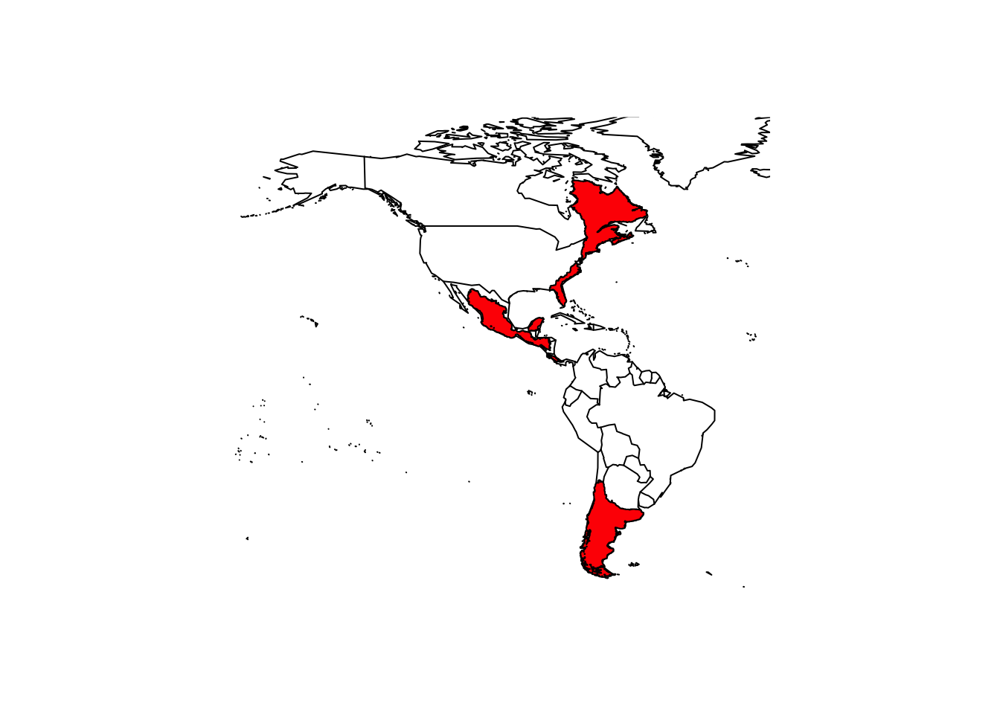
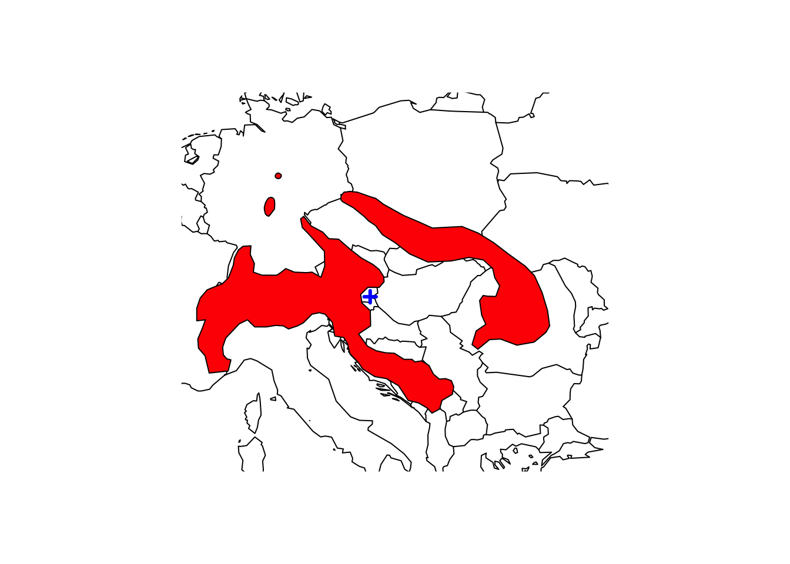
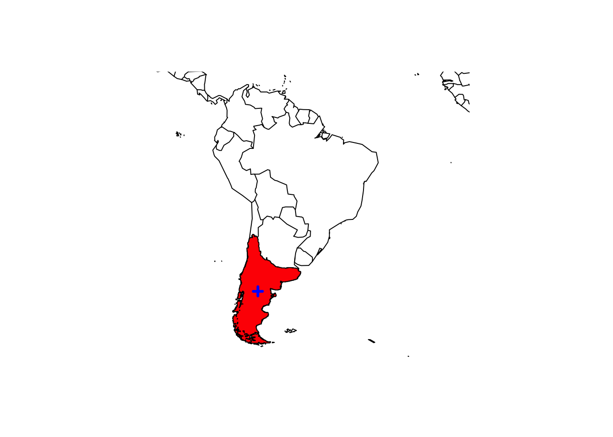
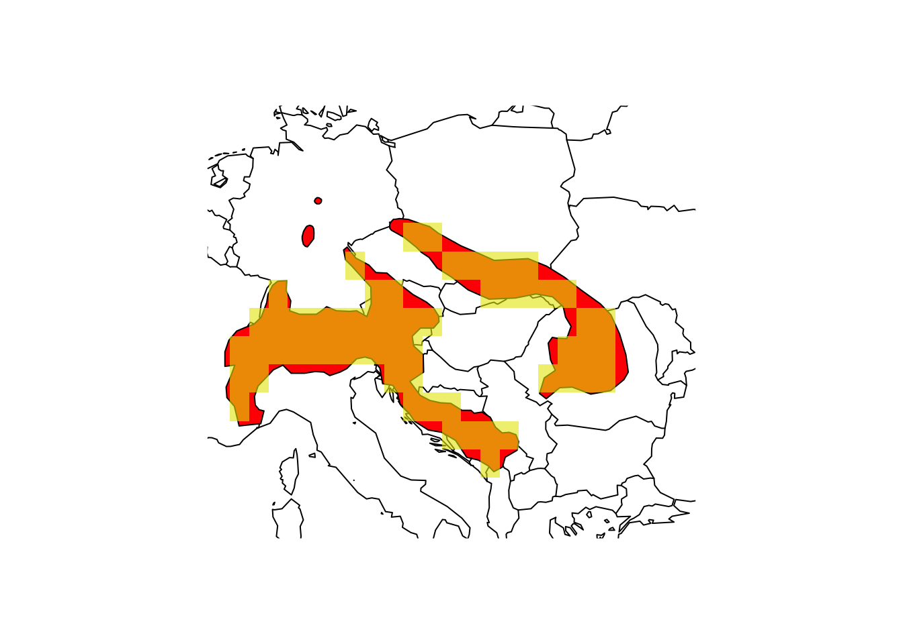
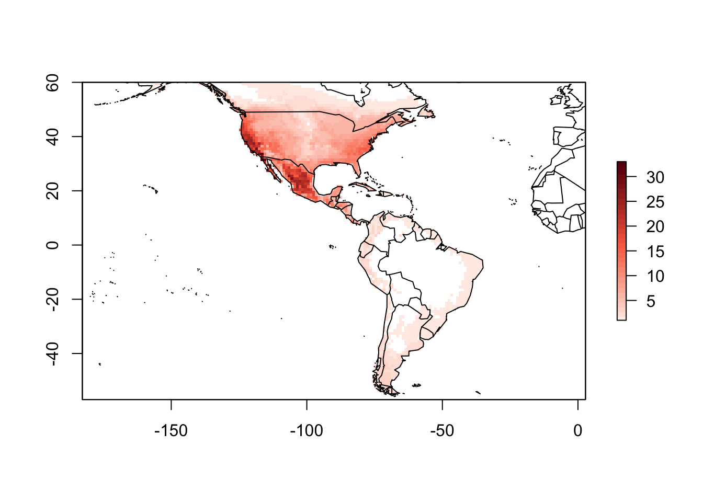
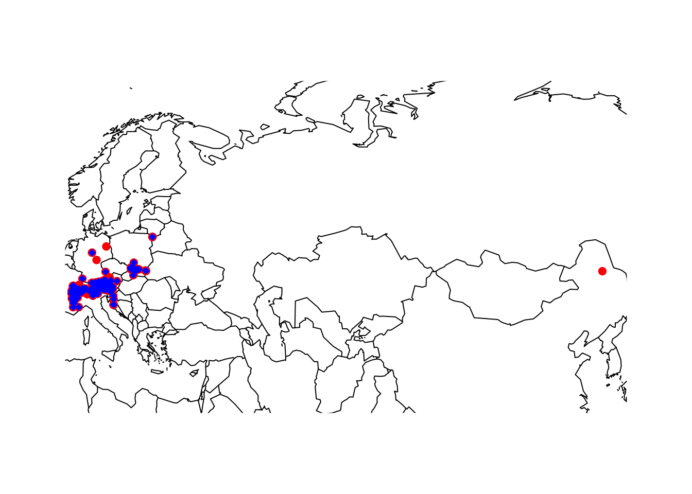
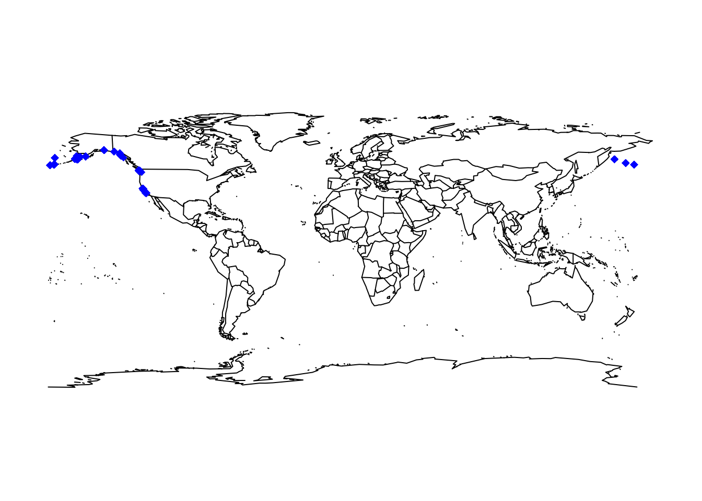
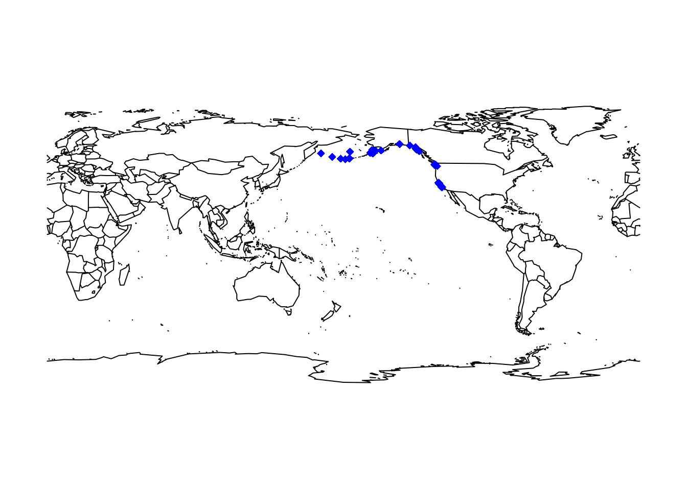

Global species data
RStudio project
Open the RStudio project that we created in the first session. I recommend to use this RStudio project for the entire course and within the RStudio project create separate R scripts for each session.
- Create a new empty R script by going to the tab “File”, select “New File” and then “R script”
- In the new R script, type
# Session 4: Global species dataand save the file in your folder “scripts” within your project folder, e.g. as “4_SpeciesData.R”
We are living in an age of big data where biodiversity are becoming increasingly available in digital format and at a global scale (Wüest et al. 2019). Many different types of biodiversity data exist, e.g. from standardised monitoring schemes, citizen science platforms, or expert knowledge. Each of these data types comes with own challenges. Here, we simply want to learn how we can obtain and process typical types of species data. Specifically, we will work with range maps of terrestrial animals and plants, and with occurrence data for terrestrial species in GBIF(the Global Biodiversity Information facility) and for marine species in OBIS(the Ocean Biodiversity Information System).
1 Range maps
We rarely have detailed biodiversity data available over large geographic extents. At broad (continental to global) extents, expert-drawn range maps (also called extent-of-occurrence maps) are often the primary data source on species distributions.
1.1 IUCN range maps
The IUCN (the International Union for the Conservation of Nature) provides expert range maps for a large number of species including mammals, birds (through BirdLife International), amphibians, reptiles, and freshwater fishes. There are also some range maps on plants and marine species, but these are very limited taxonomically. Have a look for which taxa range maps are available: https://www.iucnredlist.org/resources/spatial-data-download. You can download them for free, but you should provide some information on your work to obtain the data.
Most of the IUCN data are provided in the form of shapefiles. In practical 2, we have already loaded the range map of the Alpine shrew and learned how ti use the package raster for reading in the shapefiles. You may remember that the shapefile is recognized as SpatialPolygonsDataFrame.
library(raster)## Loading required package: sp# Load the shapefile
(shrew <- shapefile('data/IUCN_Sorex_alpinus.shp'))## class : SpatialPolygonsDataFrame
## features : 1
## extent : 5.733728, 26.67935, 42.20601, 51.89984 (xmin, xmax, ymin, ymax)
## crs : +proj=longlat +datum=WGS84 +no_defs
## variables : 27
## names : id_no, binomial, presence, origin, seasonal, compiler, yrcompiled, citation, source, dist_comm, island, subspecies, subpop, legend, tax_comm, ...
## value : 29660, Sorex alpinus, 1, 1, 1, IUCN, 2008, IUCN (International Union for Conservation of Nature), NA, NA, NA, NA, NA, Extant (resident), NA, ...# Plot the Central Europe
library(maps)
map('world',xlim=c(5,30), ylim=c(40,55))
# Overlay the range of the Alpine Shrew
plot(shrew, col='red', add=T)1.2 BIEN range maps
The BIEN database (Botanical Information and Ecology Network) contains many range maps on plants, but unfortunately only for the Americas. These can be accessed using the BIEN package. As illustrative example, we load the range map for the monkey puzzle tree (or Chilean pine - Araucaria araucana).
library(BIEN)
library(sp)
# Load the range map for the monkey puzzle
(monkey_puzzle <- BIEN_ranges_load_species('Araucaria_araucana'))## class : SpatialPolygonsDataFrame
## features : 1
## extent : -109.9819, -55.46083, -55.73974, 62.67197 (xmin, xmax, ymin, ymax)
## crs : +proj=longlat +datum=WGS84 +no_defs
## variables : 1
## names : species
## value : Araucaria_araucana# Map
map('world',xlim = c(-180,-20),ylim = c(-60,80))
plot(monkey_puzzle,col='red',add=T)
The native range of the mokey puzzle is in the Chilean Andes, so clearly the range maps also show areas where the species naturalized.
1.3 Range size and range centre
The raster package allows us to easily calculate the area of the polygons, meaning the range size of our species. The function area() outputs the area in square meters (if the CRS is in long/lat format).
# Range area of alpine shrew in square meters:
area(shrew)## [1] 490543310097# Range area of alpine shrew in square kilometers:
area(shrew)/1000000## [1] 490543.3# Range area of monkey puzzle in square meters:
area(monkey_puzzle)## [1] 5.783633e+12# Range area of monkey puzzle n square kilometers:
area(monkey_puzzle)/1000000## [1] 5783633We can also very easily calculate the centre of gravity or range centroid from the spatial polygons.
library(rgeos)## rgeos version: 0.5-5, (SVN revision 640)
## GEOS runtime version: 3.8.1-CAPI-1.13.3
## Linking to sp version: 1.4-2
## Polygon checking: TRUE# Range centroid:
gCentroid(shrew)## class : SpatialPoints
## features : 1
## extent : 16.02645, 16.02645, 46.90336, 46.90336 (xmin, xmax, ymin, ymax)
## crs : +proj=longlat +datum=WGS84 +no_defs# Map the species range and add the centroid to the map
map('world',xlim=c(5,30), ylim=c(40,55))
plot(shrew, col='red', add=T)
plot(gCentroid(shrew), col='blue',add=T,lwd=3)
We need to be careful how to interpret these centroids. They represent the centre of gravity, so losely the mean coordinates of the distribution (weighted by cell size) but obviously, if we have several patches, the centroid might not even fall within an occupied patch.
In case of the Monkey Puzzle, we have suspected that the range maps also contain non-native areas. We can clip the range maps to a desired spatial extent and then only calculate the range centroid for this (presumed) native range.
# Let's crop the range polygons to South America
monkey_puzzle_SAm <- gIntersection(monkey_puzzle, as(extent(-85, -30, -55, 5),"SpatialPolygons"))
# Map the range and range centroid
map('world',xlim = c(-100,-10),ylim = c(-60,15))
plot(monkey_puzzle_SAm,col='red',add=T)
plot(gCentroid(monkey_puzzle_SAm), col='blue',add=T,lwd=3)
1.4 Rasterize range maps
For many applications in macroecology, we need to rasterize the polygons. The problem is that it is unclear at which spatial resolution the range maps accurately represent species occurrences. Hurlbert and Jetz (2007) and Jetz, McPherson, and Guralnick (2012) define the minimum spatial resolution as 100-200km (1-2°), although also resolutions of 50km (0.5°) and finer have been used (Krosby et al. 2015).
Rasterizing polgyon data is made very easy in the raster package. We first have to define a raster grid of the desired resolution, and then transfer the polgyon data to the raster cells.
# By default, raster() will create a 1° resolution map in the *WGS 84* coordinate system (lon/lat).
(r_1deg <- raster())## class : RasterLayer
## dimensions : 180, 360, 64800 (nrow, ncol, ncell)
## resolution : 1, 1 (x, y)
## extent : -180, 180, -90, 90 (xmin, xmax, ymin, ymax)
## crs : +proj=longlat +datum=WGS84 +no_defs(shrew_1deg <- rasterize(shrew, r_1deg))## class : RasterLayer
## dimensions : 180, 360, 64800 (nrow, ncol, ncell)
## resolution : 1, 1 (x, y)
## extent : -180, 180, -90, 90 (xmin, xmax, ymin, ymax)
## crs : +proj=longlat +datum=WGS84 +no_defs
## source : memory
## names : layer
## values : 1, 1 (min, max)
## attributes :
## ID id_no binomial presence origin seasonal compiler yrcompiled
## 1 29660 Sorex alpinus 1 1 1 IUCN 2008
## citation source dist_comm island
## IUCN (International Union for Conservation of Nature) <NA> <NA> <NA>map('world',xlim=c(5,30), ylim=c(40,55))
plot(shrew, col='red', add=T)
plot(shrew_1deg, add=T, alpha=0.6, legend=F)
Obviously, the margins of the range polgyon and the raster map differ at several places. What rule is being used to determine whether polygon data is transferred to a raster cell? Check out the help page ?rasterize to find out.
There are also newer macroecological packages in R that facilitate working with range maps and rasterising them, for example the function lets.presab() in the letsR package.
library(letsR)
# The lets.presab() function expects specific column names in the Polygons data frame
colnames(monkey_puzzle@data) <- "binomial"
# We set the resolution to 1 degree (the default) and restrict the spatial extent to South America
r_monkey_puzzle <- lets.presab(monkey_puzzle, resol=1, xmn = -100, xmx = -10, ymn = -57, ymx = 15)
# Map the range and range centroid
map('world',xlim = c(-100,-10),ylim = c(-60,15))
plot(monkey_puzzle_SAm,col='blue',add=T)
plot(r_monkey_puzzle, add=T, alpha=0.6, legend=F)
The letsR package also allows to bulk-download multiple species and rasterise them to form a richness map. As example, we look at the Pinus genus in the Americas
# Extract the available Pinus species names
(pinus_names <- BIEN_ranges_genus("Pinus",match_names_only = T)[,1])## [1] "Pinus_albicaulis" "Pinus_aristata" "Pinus_arizonica"
## [4] "Pinus_armandii" "Pinus_attenuata" "Pinus_ayacahuite"
## [7] "Pinus_balfouriana" "Pinus_banksiana" "Pinus_brutia"
## [10] "Pinus_bungeana" "Pinus_canariensis" "Pinus_caribaea"
## [13] "Pinus_cembroides" "Pinus_clausa" "Pinus_contorta"
## [16] "Pinus_coulteri" "Pinus_culminicola" "Pinus_densiflora"
## [19] "Pinus_devoniana" "Pinus_douglasiana" "Pinus_durangensis"
## [22] "Pinus_echinata" "Pinus_edulis" "Pinus_elliottii"
## [25] "Pinus_engelmannii" "Pinus_flexilis" "Pinus_georginae"
## [28] "Pinus_glabra" "Pinus_greggii" "Pinus_halepensis"
## [31] "Pinus_hartwegii" "Pinus_herrerae" "Pinus_jeffreyi"
## [34] "Pinus_koraiensis" "Pinus_lambertiana" "Pinus_lawsonii"
## [37] "Pinus_leiophylla" "Pinus_longaeva" "Pinus_luchuensis"
## [40] "Pinus_lumholtzii" "Pinus_luzmariae" "Pinus_maximartinezii"
## [43] "Pinus_maximinoi" "Pinus_monophylla" "Pinus_montezumae"
## [46] "Pinus_monticola" "Pinus_mugo" "Pinus_muricata"
## [49] "Pinus_nelsonii" "Pinus_nigra" "Pinus_oocarpa"
## [52] "Pinus_palustris" "Pinus_parviflora" "Pinus_patula"
## [55] "Pinus_peuce" "Pinus_pinaster" "Pinus_pinceana"
## [58] "Pinus_pinea" "Pinus_ponderosa" "Pinus_praetermissa"
## [61] "Pinus_pringlei" "Pinus_pseudostrobus" "Pinus_pumila"
## [64] "Pinus_pungens" "Pinus_quadrifolia" "Pinus_radiata"
## [67] "Pinus_remota" "Pinus_resinosa" "Pinus_rigida"
## [70] "Pinus_roxburghii" "Pinus_rzedowskii" "Pinus_sabiniana"
## [73] "Pinus_serotina" "Pinus_strobiformis" "Pinus_strobus"
## [76] "Pinus_sylvestris" "Pinus_tabuliformis" "Pinus_taeda"
## [79] "Pinus_tecunumanii" "Pinus_teocote" "Pinus_thunbergii"
## [82] "Pinus_torreyana" "Pinus_virginiana" "Pinus_wallichiana"# Download the range maps for all Pinus species
pinus <- BIEN_ranges_load_species(pinus_names)
# Format the column names and rasterise
colnames(pinus@data) <- "binomial"
r_pinus <- lets.presab(pinus, resol=1, xmn = -170, xmx = -10, ymn = -57, ymx = 60)
# Plot species richness
plot(r_pinus)
2 Occurrence data in GBIF and OBIS
2.1 GBIF data
GBIF defines itself as “an international network and research infrastructure funded by the world’s governments and aimed at providing anyone, anywhere, open access to data about all types of life on Earth”. GBIF contains worldwide point records from observations as well as museum records or other contributions. The data are thus not standardised and often it is unclear which spatial resolution the data represent. To understand this, let’s look at some example under https://www.gbif.org/.
2.1.1 Downloading gbif records
We will use the package rgbif to search and retrieve data from GBIF. A good tutorial to this package is offered here. Alternatively, the dismo package offers the function gbif() to download gbif records. Robert Hijmans, who wrote the raster and the dismo package, also offers great tutorials on his website: http://rspatial.org.
library(rgbif)
# Check out the number of occurrences found in GBIF:
occ_count()## [1] 1635375194# number of observations:
occ_count(basisOfRecord='OBSERVATION')## [1] 18662662# number of occurrences reported for Germany:
occ_count(country=isocodes[grep("Germany", isocodes$name), "code"])## [1] 40934126# number of observations reported for Germany:
occ_count(country=isocodes[grep("Germany", isocodes$name), "code"],basisOfRecord='OBSERVATION')## [1] 239352As example, we will use the Alpine shrew (Sorex alpinus) again. We first check whether any synonyms exist and how many records exist for the species. Download will be slow for high numbers of records.
# Check for synonyms
name_suggest(q='Sorex alpinus', rank='species')
# Check number of records - here filtered to those with coordinate information.
# Note that we limit the number of records to the first 10 as we are only interested in the meta data:
occ_search(scientificName = "Sorex alpinus", hasCoordinate=T, limit = 10)One of the most interesting items from the outputs is the “Records found” at the very top of the output. Please be aware that occ_search() will not allow to download more than 100’000 records. If the GBIF data contain more, then you can set additional filters (e.g. set time period with argument year or geographic extent with arguments decimalLatitude and decimalLongitude) or split the area into spatial tiles (by setting geographic extent) and download the tiles separately. (Alternatively, check out the dismo package and the function gbif() to download gbif records. Robert Hijmans, who wrote the raster and the dismo package, also offers great tutorials on his website: http://rspatial.org.))
Now, let’s download the records and plot them. We had less than 500 records for the shrew, limit=500 will be enough to download all data. We can then map the records and compare to the range map that we downloaded for the shrew.
gbif_shrew <- occ_search(scientificName = "Sorex alpinus", hasCoordinate=T, limit = 500)
# We are just interested in the data frame containing the records
gbif_shrew <- gbif_shrew$data
map('world',xlim=c(5,130), ylim=c(30,75))
points(gbif_shrew$decimalLongitude, gbif_shrew$decimalLatitude, col='red', pch=19)
2.1.2 Cleaning and cross-checking GBIF data
You should always critically assess the quality of your data. This also holds true for GBIF data. Look at the map again, do all records look plausible?
Not all coordinates seem to be correct, and we thus need to cross-check these. Robert Hijmans provides some code in his dismo tutorials. We will here use the package CoordinateCleaner (Zizka et al. (2019); see tutorials here). The function clean_coordinates() allows cleaning geographic coordinates using different cross-checks. Here, we first compare whether the coordinates for each entry match the country code provided (test centroids) for each entry and are no outliers (test outliers). Also, we test for vicinity to a biodiversity institution like botanical or zoological gardens (test ìnstitutions and radius inst_rad), and for duplicates (test duplicates). There are many more tests that you can check in the help pages ?clean_coordinates.
library(CoordinateCleaner)
# We use only those data entries with coordinate information - Note that you don't need this if you have used the hasCoordinate=T in the occ_search() function:
gbif_shrew <- subset(gbif_shrew, !is.na(decimalLatitude))
# We now clean the coordinates and check for outliers - see ?clean_coordinates for more options
cl_gbif_shrew <- clean_coordinates(gbif_shrew, lon="decimalLongitude", lat="decimalLatitude", countries="countryCode", tests=c("centroids", "outliers", "duplicates", "institutions"), inst_rad = 10000)## Testing coordinate validity## Flagged 0 records.## Testing country centroids## Flagged 0 records.## Testing geographic outliers## Flagged 1 records.## Testing biodiversity institutions## Flagged 26 records.## Testing duplicates## Flagged 188 records.## Flagged 210 of 483 records, EQ = 0.43.map('world',xlim=c(5,130), ylim=c(30,75))
points(gbif_shrew$decimalLongitude, gbif_shrew$decimalLatitude, col='red', pch=19)
points(gbif_shrew$decimalLongitude[cl_gbif_shrew$.summary], gbif_shrew$decimalLatitude[cl_gbif_shrew$.summary], col='blue', pch=18)
# remove the flagged records
gbif_shrew2 <- gbif_shrew[cl_gbif_shrew$.summary,]Have a look at Zizka et al. (2019) and the examples by Robert Hijmans (http://rspatial.org) for finding out about other typical problems with GBIF and how to deal with these.
Exercise:
Pick a species of your own choice, look up relevant information about this on the web, download the data from GBIF and clean them.
- Further explore additional arguments in
occ_search(). For example, how can you restrict data download to specific months, years or regions? - Further explore additional arguments in
clean_coordinates(). For example, how can we test for records in the sea or the null island?
2.2 OBIS data
Currently, the OBIS database holds more than 135 000 marine species. We can access the database using the package robis. This can be installed from github.
library(devtools)
install_github("iobis/robis")You can visually check out the data on the OBIS Mapper webpage. Occurrence can be downloaded from the website or using the function occurrence() from robis package.
library(robis)
# Download OBIS data for the sea otter
otter <- occurrence('Enhydra lutris')
# Map data
map('world')
points(otter$decimalLongitude, otter$decimalLatitude, col='blue', pch=18)
Showing the occurrence records in our typically Atlantic-centred world view is a little confusing. We can obtain a Pacific-centred view by simply wrapping the maps.
map("world", wrap=c(0,360))
points(ifelse(otter$decimalLongitude<0,otter$decimalLongitude+360,otter$decimalLongitude), otter$decimalLatitude, col='blue', pch=18)
Overall, the data look quite plausible. In general, however, we also need to pay attention to data cleaning in OBIS data. As the OBIS data follow the same data standards as GBIF data, we can also use the package CoordinateCleaner for data cleaning.
# We test for spatial outliers and remove duplicates
cl_otter <- clean_coordinates(otter, lon="decimalLongitude", lat="decimalLatitude", tests=c("duplicates","outliers"))## Testing coordinate validity## Flagged 0 records.## Testing geographic outliers## Flagged 0 records.## Testing duplicates## Flagged 2141 records.## Flagged 2141 of 3240 records, EQ = 0.66.# remove the flagged records
otter2 <- otter[cl_otter$.summary,]Now it’s your turn. Pick a species of your choice (terrestrial or marine, plant or animal), consider which data source will be most appropriate, get the data, check data quality and map the distribution.
References
Hurlbert, Allen H., and Walter Jetz. 2007. “Species Richness, Hotspots, and the Scale Dependence of Range Maps in Ecology and Conservation.” PNAS 104: 13384–9.
Jetz, Walter, Jana M. McPherson, and Robert P. Guralnick. 2012. “Integrating Biodiversity Distribution Knowledge: Toward a Global Map of Life.” Trends in Ecology & Evolution 27: 151–59.
Krosby, Meade, Chad B. Wilsey, Jenny L. McGuire, Jennifer M. Duggan, Theresa M. Nogeire, Julie A. Heinrichs, Joshua J. Tewksbury, and Joshua J. Lawler. 2015. “Climate-Induced Range Overlap Among Closely Related Species.” Nature Climate Change 5: 883–86.
Wüest, Rafael O., Niklaus E. Zimmermann, Damaris Zurell, Jake M. Alexander, Susanne A. Fritz, Christian Hof, Holger Kreft, et al. 2019. “Macroecology in the Age of Big Data Where to Go from Here?” Journal of Biogeography 47 (1). Wiley: 1–12. https://doi.org/10.1111/jbi.13633.
Zizka, Alexander, Daniele Silvestro, Tobias Andermann, Josue Azevedo, Camila Duarte Ritter, Daniel Edler, Harith Farooq, et al. 2019. “CoordinateCleaner : Standardized Cleaning of Occurrence Records from Biological Collection Databases.” Methods in Ecology and Evolution 10 (5): 744–51. https://doi.org/10.1111/2041-210x.13152.